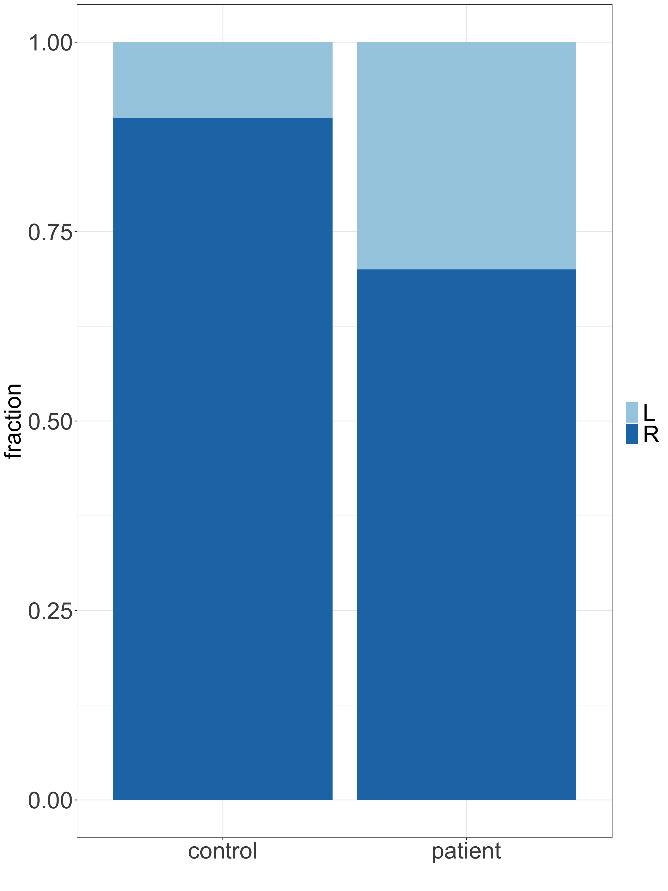
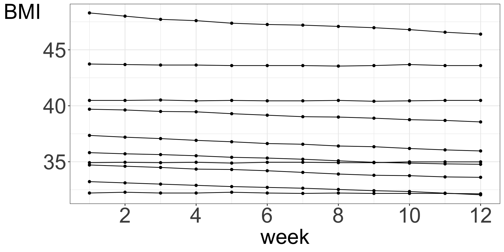
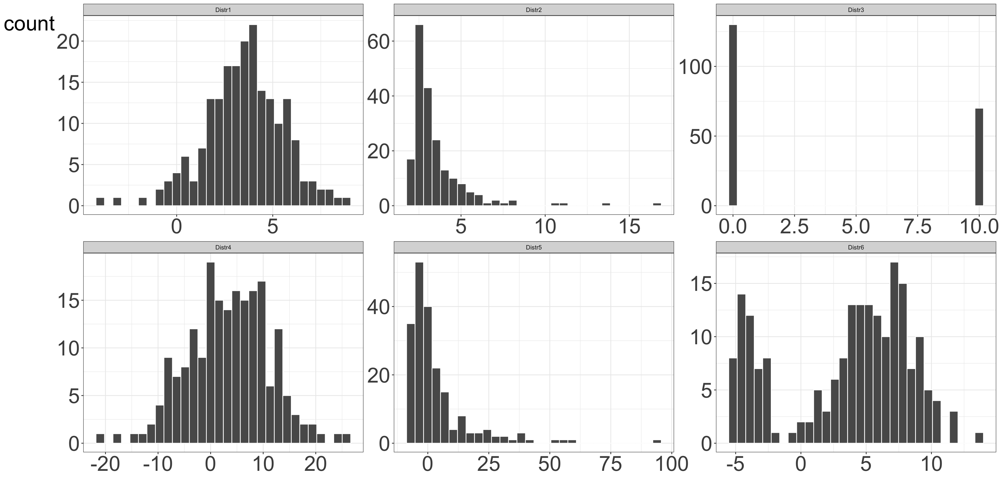

Descriptive statistics
Introduction
Descriptive statistics is a term describing simple analyses of data to help getting to know the data by:
- describing the data
- showing & visualizing the data
- summarizing the data
Beyond getting to know the data descriptive statistics is used to:
- uncover potential patterns in the data, incl. outliers
- guide down-stream analysis
Data types
One of the first thing we tend to notice about the data is the data type. We differentiate between categorical (qualitative) and numerical (quantitative) data types.
flowchart LR A(Data types) --> B(Categorical) A(Data types) --> C(Numerical)
Important
Depending on the data type we use different methods to describe, summarize and visualize the data. Beyond descriptive statistics, we even use different methods to analyse the data.
Data types
Categorical data types are further divided into:
flowchart LR A(Data types) --> B(Categorical) A(Data types) --> C(Numerical) B(Categorical) --> D(Nominal i.e. named) B(Categorical) --> E(Ordinal i.e. named and ordered)
- Nominal: named, categories are mutually exclusive and unordered
- e.g.dead/alive, healthy/sick, WT/mutant, AA/Aa/aa, male/female, red/green/blue
- Ordinal: named and ordered, categories are mutually exclusive and ordered
- e.g. pain (weak, moderate, severe), AA/Aa/aa, very young/young/middle age/old/very old, grade I, II, III, IV
Data types
Numerical data types are further divided into:
flowchart LR A(Data types) --> B(Categorical) A(Data types) --> C(Numerical) C(Numerical) --> D(Discrete i.e. finite or countable infinite values) C(Numerical) --> E(Continuous i.e. infinitely many uncountable values)
- Discrete: finite or countable infinite values
- days sick last year, number of cells, number of reads
- Continuous: infinitely many uncountable values
- e.g. height, weight, concentration
Categorical data
Categorical data can be summarized by counting the number of observations of each category and summarizing in a frequency table or graphically in a bar chart. Alternatively we can calculate the the proportions (or percentages) of each category.
flowchart TD A(Categorical data) --> B(Numerical summary) B(Numerical summary) --> D(Table of frequencies
Proportions
Percentages
...) A(Categorical data) --> C(Graphical summary) C(Graphical summary) --> E(Bar chart
Pie chart
Mosaic plot
...)
Categorical data
Example 1 Lab mice: sex
Imagine, we run an experiment, in which follow 100 mice over a period of 24 weeks. To begin with, we record mice sex (male/female). In addition, every week we record the weight (g) of each mouse, starting at week 5. How can we summarize the sex (male/female) variable?
| id | sex | male | week | weight |
|---|---|---|---|---|
| 1 | male | 1 | 5 | 19.05 |
| 1 | male | 1 | 6 | 19.99 |
| 1 | male | 1 | 7 | 20.79 |
| 1 | male | 1 | 8 | 21.37 |
| 1 | male | 1 | 9 | 22.08 |
| 1 | male | 1 | 10 | 22.72 |
| id | sex | male | week | weight |
|---|---|---|---|---|
| 100 | female | 0 | 19 | 22.99 |
| 100 | female | 0 | 20 | 23.38 |
| 100 | female | 0 | 21 | 23.97 |
| 100 | female | 0 | 22 | 24.26 |
| 100 | female | 0 | 23 | 24.87 |
| 100 | female | 0 | 24 | 25.09 |
Categorical data
Let’s focus on only subset of data, the first 10 mice measured at week 5.
| id | sex | male | week | weight |
|---|---|---|---|---|
| 1 | male | 1 | 5 | 19.05 |
| 2 | male | 1 | 5 | 20.67 |
| 3 | female | 0 | 5 | 18.18 |
| 4 | male | 1 | 5 | 20.33 |
| 5 | male | 1 | 5 | 21.02 |
| 6 | male | 1 | 5 | 16.88 |
| 7 | female | 0 | 5 | 18.41 |
| 8 | male | 1 | 5 | 24.19 |
| 9 | male | 1 | 5 | 21.74 |
| 10 | female | 0 | 5 | 18.03 |
- Information about male/female falls under categorical data type.
- Things we can ask here to summarize the data are:
- how many mice of each category we have, i.e. how many males and how many females?
- what are the males/females percentages (or proportions)?
- We can also visualize these descriptive statistics in a bar chart of a pie chart.
Categorical data
Frequency table
| sex | n | percent (%) | proportion |
|---|---|---|---|
| female | 3 | 30 | 0.3 |
| male | 7 | 70 | 0.7 |
Bar chart & pie chart
Categorical data
Example 2 Left-handedness
We are interested in whether left-handedness is associated with suffering from migraine. We collect data on handedness in 30 patients suffering from migraine on regular basis and 40 healthy controls.
Summary table
| group | Total | Left-handed | Left handed (%) |
|---|---|---|---|
| control | 40 | 4 | 10 |
| patient | 30 | 9 | 30 |
Contingency table (cross table)
Shows the multivariate frequency distribution of variables
| L | R | Sum | |
|---|---|---|---|
| control | 4 | 36 | 40 |
| patient | 9 | 21 | 30 |
| Sum | 13 | 57 | 70 |
Categorical data
Bar chart with 2 categorical variables
Again, we can visualize the frequencies using bar charts.


Numerical data
Numerical data, both discrete and continuous, can be visualized and summarized in many ways. Common plots include histograms, density plots, box plots and scatter plots. Summary statistics include mean, median, quantiles, variance, standard deviation and median absolute deviation.
flowchart TD A(Numerical data) --> B(Numerical summary) A(Numerical data) --> C(Graphical summary) B(Numerical summary) --> D(Mean
Median
Quantiles
Variance
Standard deviation
Mean absolute deviation
...) C(Graphical summary) --> E(Histogram
Density plot
Box plot
...)
Numerical data
Example 3 Throwing 10 dice
Let’s imagine that we have 10 dice and we throw them all at once. We count and record the total number of dots and repeat the whole process 100 times.
The counts for the first few runs are:
| run | sumcounts |
|---|---|
| 1 | 40 |
| 2 | 29 |
| 3 | 33 |
| 4 | 27 |
| 5 | 40 |
| 6 | 27 |
Let’s make some plots.
Numerical data
- When the data set is not very big, i.e. does not contain millions of measurements for a given numerical variable of interest, it can be useful to plot all measurements in a 1D scatter plot (strip plot).
- A jittered strip plot attempts to reduce overlays by randomly moving data points by small amounts to the left and right.
- In a beeswarm plot data points are moved only when necessary, and even then the data point is only moved the minimum distance necessary to avoid overlays.
Numerical data
- A histogram bins the data and counts the number of observations that fall into each bin.
- A density plot is like a smoothed histogram where the total area under the curve is set to 1. A density plot is an approximation of a distribution.
Numerical data
- A box plot, also called a box-and-whisker plot, shows a box covering 50% of the data
- The center line is located at the median, a value such that 50% of the measurements are below the median.
- The whiskers extend to the most extreme data point or at most 1.5 times the length of the box. Any measurements further out are shown as outliers.
- Note: 1.5 times is the default used in both ggplot and basic R graphics but it can also be adjusted.
- A box plot is based on both measures of location and of spread.
Numerical data
Numerical data
Strip plot, jittered stirp plot & beeswarm stratified by group
Numerical data
Histogram & density plot stratified by group
Numerical data
Box plot stratified by group
Numerical data
Scatter plot: 2 numerical variables
Scatter plots are useful when studying a relationship (association) between two numerical variables. Let’s add some data on our mice length and have a look at the relationship between mice weight and length at week 10.

Numerical data
Sometimes, it is useful to connect the observations in the order in which they appear, e.g. when analyzing time series data.
Measures of location
flowchart LR A(Average value) --> C(Condensed data) B(Spread) --> C(Condensed data)
- It is not always easy to get a “feeling” for a set of numerical measurements unless we summarize the data in a meaningful way. Diagrams, as shown in the previous chapter, are often a good starting point.
- We can further condense the information by reporting what constitutes a representative value. If we also know how widely scattered the observations are around it, we can formulate an image of data.
- The average is a general term for a measure of location and some common ways of calculating the average are mode, mean and median.
Measures of location
Mode
Mode values is the value that most common occurs across the measurements. It can be found for numerical and categorical data types.
Median
Median value divides the ordered data values into two equally sized groups, so 50% of the values are below and 50% are above the median value.
Example 4 Given mice weight measurements (rounded up) for the first 6 mice during week 5, what are mode and median values?
| id | sex | male | week | weight |
|---|---|---|---|---|
| 1 | male | 1 | 5 | 19 |
| 2 | male | 1 | 5 | 21 |
| 3 | female | 0 | 5 | 18 |
| 4 | male | 1 | 5 | 20 |
| 5 | male | 1 | 5 | 21 |
| 6 | male | 1 | 5 | 17 |
Measures of location
Arithmetic mean
The arithmetic mean, also commonly referred to as to mean, is calculated by adding up all the values and diving this by the number of values in the data set.
Mathematically, for \(n\) observations \(x_1, x_2, \dots, x_n\), the arithmetic mean value is calculated as: \[\bar x = \frac{x_1+x_2+\dots+x_n}{n} = \frac{1}{n}\displaystyle\sum_{i=1}^n x_i \qquad(1)\]
Weighted mean
As all the values equally contribute to the calculations, the arithmetic mean value is easily affected by outliers and is distorted by skewed distributions. Sometimes, the weighted mean may be more useful, as it allows weights to certain values of the variable of interest. We attach a weight, \(w_i\) to each of the observed values, \(x_i\), in our sample, to reflect this importance and define the weighted mean as: \[\bar{x} = \frac{w_1x_1 + w_2x_2 + \ldots + w_nx_n}{w_1 + w_2 + \ldots + w_n} = \frac{\displaystyle\sum_{i=1}^{n}w_ix_i}{\displaystyle\sum_{i=1}^{n}w_i} \qquad(2)\]
Measures of location
Example 5
Imagine that you are interested in estimating the length of a wild type mice in your neighborhood. One day you manage to catch and measure 6 mice and observe lengths of 12, 16, 18, 20, 20, 17 (cm), where 12 and 16 cm were observed for female mice. You have heard that females and males are equally likely to live in your neighborhood. How do you calculate the weighted average to estimate the mice length given your data?
Measures of location
Note that several very different distributions can still have the same mean value.
Figure 4: Examples of various distributions having the same mean value of 3.5
Measures of spread
Quartiles are the three values that divide the data values into four equally sized groups.
- Q1. Lower quartile. 25% of values are below Q1. Divides the values below the median into equally sized groups.
- Q2. Median. 50% of values are below Q2 and 50% are above Q2
- Q3. Upper quartile. 75% of values are below Q3. Divides the values above the median into equally sized groups.
- IQR. Interquartile range, midspread, middle 50%. IQR = Q3 - Q1.
25% 50% 75%
17.7875 19.3300 20.6175 Measures of spread
Variance and standard deviation
The variance of a set of observations is their mean squared distance from the mean value:
\[\sigma^2 = \frac{1}{n} \sum_{i=1}^n (x_i - \bar x)^2. \qquad(3)\]

Figure 5: First ten measurments of mice weight at week 5. Grey lines show the distance to the mean value.
Measures of spread
The variance is measured in the square of the unit in which \(x\) was measured. Standard deviation is defined as the square root of the variance:
\[\sigma = \sqrt{\frac{1}{n} \sum_{i=1}^n (x_i - \bar x)^2} \qquad(4)\]
Typically, we regard the collection of observations \(x_1, \dots, x_n\) as a sample drawn from a large population of possible observations. It can be shown that we obtain a better sample estimate of the population standard deviation if we divide by \((n-1)\) and calculate the sample standard deviation instead.
\[s = \sqrt{\frac{1}{n-1} \sum_{i=1}^n (x_i - \bar x)^2}. \qquad(5)\]
IDA & EDA
EDA: Exploratory Data Analysis
EDA
“…exploratory data analysis is an approach of analyzing data sets to summarize their main characteristics, often using statistical graphics and other data visualization methods. A statistical model can be used or not, but primarily EDA is for seeing what the data can tell us beyond the formal modeling and thereby contrasts traditional hypothesis testing. Exploratory data analysis has been promoted by John Tukey since 1970 to encourage statisticians to explore the data, and possibly formulate hypotheses that could lead to new data collection and experiments…” (Wikipedia)
IDA: Initial Data Analysis
IDA
“…EDA is different from initial data analysis (IDA) which focuses more narrowly on checking assumptions required for model fitting and hypothesis testing, and handling missing values and making transformations of variables as needed. EDA encompasses IDA…” (Wikipedia)
Summary
- Descriptive statistics is usually the first step of data analysis in which we try to familiarize ourselves with the data
- Numerical summaries displaying data diagrammatically give us idea about data distributions. They can also uncover some errors or outliers as well as emerging patterns in the data.
- Often, descriptive statistics together with data cleaning and processing, is the most time-consuming part of a bioinformatics project.
It is always a good idea to look at the raw measurements, printing them all for smaller data sets or printing randomly selected measurements from bigger data sets.
For many more options for plotting check out The R Graph Gallery https://r-graph-gallery.com
Thank you
questions?